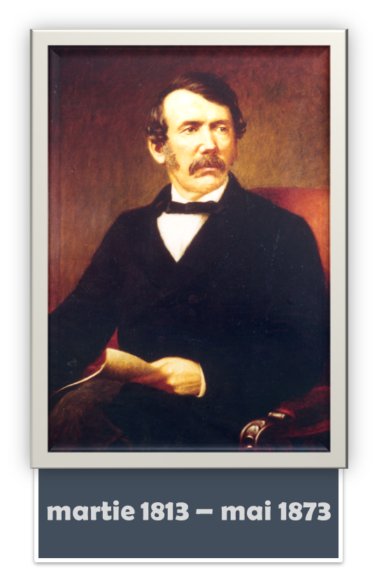
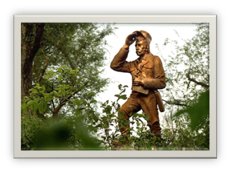

Nascut in 1813 intr-o familie stricta de scotieni, David Livingstone planuia sa devina misionar Calvinist. Dupa ce a terminat scoala, dr. Livingstone era gata sa raspandeasca Evanghelia in cele mai indepartate locuri de pe pamant. A presupus intotdeauna ca va merge in China, dar o intorsatura a destinului l-a transportat pana in Africa, unde a reusit sa faca unele dintre cele mai spectaculoase descoperiri din timpul sau.
Cand bisericile britanice din anii 1830 a facut un apel pentru misionari pentru Asia, Livingstone nu a putut lasa sansa sa-i scape. Studiind timp de doi ani pentru un grad mai avansat, Livingstone era sigur ca aventura ii este garantata.
In timp ce se imbarca pentru Asia, Livingstone afla cum China se implica in razboaiele opiului, iar calatoria a fost anulata. Livingstone ar fi astept ca situatia din China sa se stabilizeze, dar totul s-a schimbat dupa o conversatie cu un misionar din Africa de Sud pe nume Robert Moffat. Moffat l-a convins pe Livingstone ca era nevoie disperata de serviciile sale misionare in Africa. In 1841, dr. Livingstone a aterizat laCape Town, in Africa de Sud.
Moffat nu il mintise, iar serviciile lui erau de mare ajutor pentru populatiile indigene. Cu cat Livingstone se devota mai mult muncii sale misionare, a devenit si avocat al anti-sclaviei. Eforturile lui impotriva sclaviei au facut din el un dusman aprig al burilor si portughezilor.
Calatoriile lui Livingstone din sat in sat l-au adus in anumite parti ale Africii de Sud, neexplorate inca de alti europeni, starnindu-i interesul pentru interiorului Africii. Livingstone a continuat pana in nordul desertuluiKalahari, in locuri unde ceilalti europeni nu s-au avantat inca. Marea Britanie i-a recunoscut vitejia, si Livingstone a fost inclus intr-o echipa trimisa sa exploreze Lacul Ngami. Descoperirile lor au fost rasplatite cu o medalie de aur de la Royal Geographic Society. Crezand ca explorarile lui vor deschide comertul legitim in Africa si va elimina astfel comertul cu sclavi, Livingstone a spus deja celebrele cuvinte : "Voi deschide o cale spre interior, sau voi pieri".
Intre peregrinarile lui, Livingstone s-a casatorit cu fiica lui Robert Moffat, Mary, in 1845, care a calatorit alaturi de el, timp de 7 ani. Folosind ghizii Makololo din Africa, Livingstone a cartografiat o cale spre coasta Atlanticului. El a ajuns in Luanda in 1854, a vazut cascada raului Zambezi, pe care a numit-o Victoria, si a intrat in Mozambic in 1856.
Cand s-a intors in Anglia in 1856, a fost laudat ca erou national. A scris Calatorii misionare si cercetari in Africa de Sud (1857) ca un jurnal al aventurilor sale. Atat de impresionati erau europenii incat Livingstone a inceput sa tina cursuri foarte populare.
Livingstone nu a putut sta prea mult departe de Africa si si-a continuat explorarile in 1858. Intorcandu-se la fluviul Zambezi pentru o explorare mai atenta, de data aceasta a fost insotit de alti europeni, care s-au luat la lupta si echipajul a fost aproape de o rascoala. Pana in 1862, sotia sa, Mary, a murit si fiul sau nu a reusit sa ajunga in Africa, cum era planificat, deoarece era ocupat sa lupte in razboiul civil din SUA.
Cu toate acestea Livingstone a continuat si inainte de 1893 descoperirile sale au permis Marii Britanii sa isi revendice prima colonie interioara, Protectoratul britanic din Africa Centrala (Republica Malawi de azi). Acesta a fost momentul in care Livingstone a devenit obsedat de ideea de a gasi izvorul raului Nil. In 1866 cu un echipaj din Asia si Africa, a pornit in aceasta expeditie. Nemultumiti de conditiile de viata, o mare parte a echipajuluia dezertat si a fugit in Zanzibar. Temandu-se sa nu fie condamnati ca dezertori, echipajul a mintit ca triburile Ngonil-au ucis pe Dr. Livingstone pe drum.
In timp ce zvonurile circulau in Marea Britanie, dr. Livingstone si-a continuat drumul, ajungand pana la Lualaba, care l-a dus la raul Congo. Dar calatoria a inceput sa sa isi faca simtita prezenta asupra sanatatii sale, fiind deja ranit de un leu. Calatoriile sale in interior au insemnat expunerea la bilharzia, malarie si holera. Cand s-a intors laLacul Tanganyika in 1871, era aproape carat de pat si fara resurse medicale si alimentare.
Henry Stanley, jurnalist de la New York Herald, l-a gasit pe explorator grav bolnav la sosirea sa la Lacul Tanganyika. Trimis sa investigheze daca Livingstone murise cu adevarat, Stanley l-a intampinat cu celebra intrebare: "Dr. Livingstone, presupun?". Stanley a incercat sa-l convinga sa se intoarca cu el in Anglia, dar Livingstone a refuzat vehement, si jurnalistul s-a simtit fortat sa-l lase acolo.
Livingstone s-a recuperat cu proviziile lasate de Stanley, si si-a reluat rapid cautarea izvorului Nilului. S-a dovedit a fi singura sa calatorie incompleta, deoarece Livingstone a murit pe drum in 1873. Echipajul care i-a ramas fidel l-a gasit mort in patul lui. I-au curatat viscerele si inima, si i-au uscat corpul. Apoi l-au carat pe Livingstone pe brate, cale de peste 1000 de mile pana la coasta, unde trupul sau a fost transportat in Anglia pentru a fi inmormantat la Westminster Abbey.
Explorarile dr. Livingstone au furnizat informatii valoroase despre interiorul Africii pe care nimeni nu-l vazuse vreodata. Din pacate, descoperirile sale au dus la colonizarea inevitabila a teritoriului. Dar dr. Livingstone este de asemenea responsabil pentru incheierea comertului cu sclavi, pe care l-a detestat atat de puternic. Desi trupul neinsufletit al dr. Livingstone se gaseste in Anglia, inima lui ramane in Africa, in locul unde echipajul sau a ingropat-o la moartea sa.